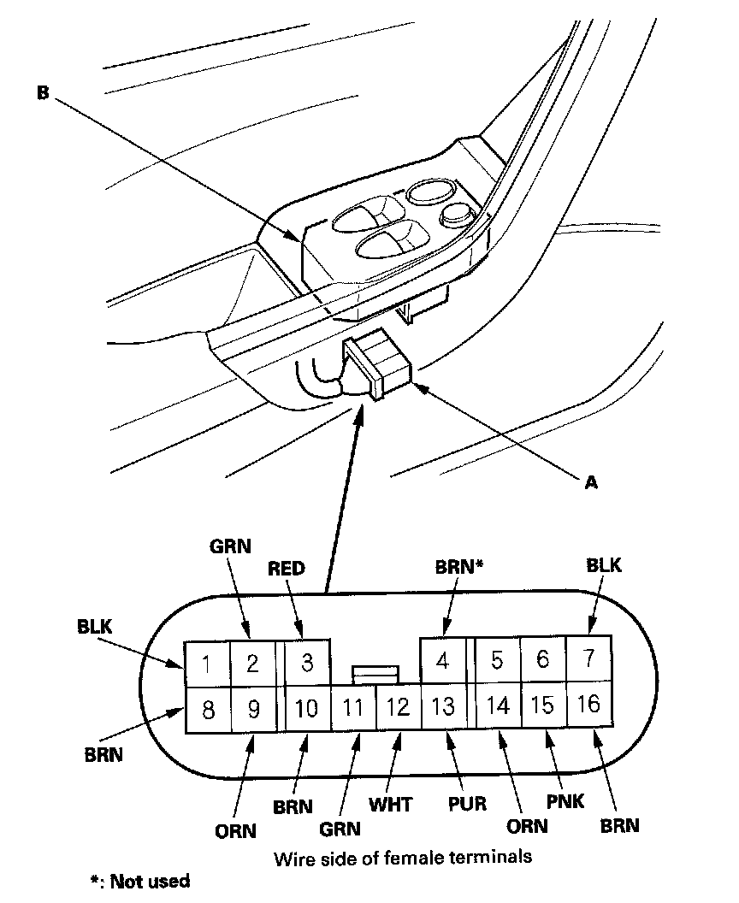
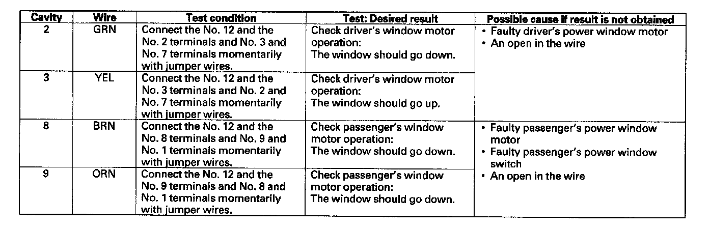
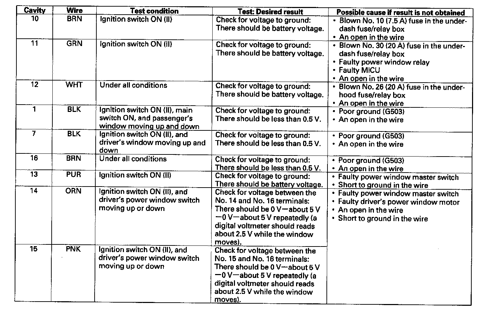

2-Door
Master Switch Input Test2-door with AUTO UP/AUTO DOWN function
NOTE: The power window control unit is built into the power window master switch, and it only controls the driver's window operations.
1. Remove the door panel.

2. Disconnect the 16P connector (A) from the master switch (B).
3. Inspect the connector and socket terminals to be sure they are all making good contact.
- If the terminals are bent, loose or corroded, repair them as necessary, and recheck the system.
- If the terminals look OK, make the following input tests at the connector.
- If a test indicates a problem, find and correct the cause, then recheck the system.
- If all the input tests prove OK, the power window master switch must be faulty; replace it.

4. With the master switch still disconnected, make these input tests at the connector.
- If any test indicates a problem, find and correct the cause, then recheck the system.
- If all the input tests prove OK, go to step 5.

5. Reconnect the 16P connector to the power window master switch. Turn the ignition switch ON (II), and make these input tests at the connector.
- If any test indicates a problem, find and correct the cause, then recheck the system.
- If all the input tests prove OK, the control unit must be faulty; replace the power window master switch.
6. Reset the power window control unit.